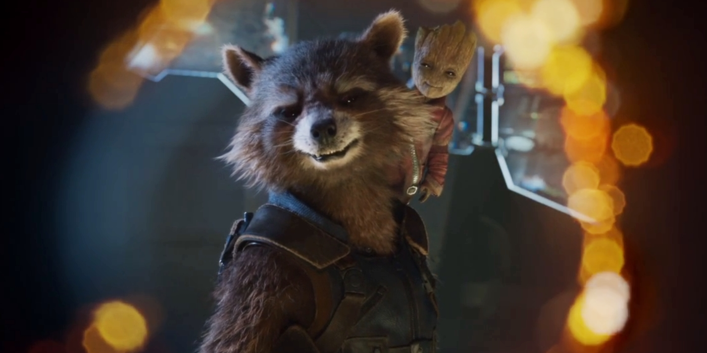

GUARDIANS OF THE GALAXY
In 2014, Peter Quill, Gamora, Drax, Rocket and Baby Groot are renowned as the Guardians of the Galaxy. Ayesha, leader of the Sovereign race, has the Guardians protect valuable batteries from an inter-dimensional monster, the Abilisk, in exchange for Gamora's estranged sister Nebula, who was caught attempting to steal the batteries. When Rocket steals them himself, the Sovereign attacks the Guardians' ship with a fleet of drones. The drones are destroyed by a mysterious figure, but the Guardians are forced to crash-land on a nearby planet. The figure reveals himself as Quill's father Ego, who invites Quill, accompanied by Gamora and Drax, to his home, while Rocket and Groot remain behind to repair the ship and guard Nebula.
Meanwhile, Ayesha hires Yondu Udonta and his crew, who have been exiled from the greater Ravager community for child trafficking, to recapture the Guardians. They capture Rocket, but when Yondu shows reluctance to turn over Quill, his lieutenant Taserface leads a mutiny with help from Nebula. Taserface imprisons Rocket and Yondu aboard Yondu's ship and executes his loyalists while Nebula leaves to track down and kill Gamora, whom she blames for all the torture inflicted on her by their father, Thanos. While imprisoned, Rocket and Yondu bond and the latter expresses his disdain for Ego. Groot, together with Yondu loyalist Kraglin, frees Rocket and Yondu and they destroy the ship and its crew as they escape, though not before Taserface tips off the Sovereign fleet.
Ego explains that he is one of the god-like Celestials, and exists in the form of the planet on which they are standing. He assumed a human guise to travel the universe and interact with other species, eventually meeting and falling in love with Quill's mother Meredith. After Meredith's death, Ego paid Yondu to collect the young Quill, but Yondu never delivered the boy, and Ego had been searching for his son ever since. He teaches Quill to manipulate the Celestial power within the planet. Nebula arrives at Ego's planet and tries to kill Gamora, but fails and the pair reach an uneasy alliance when they discover caverns filled with skeletal remains. Ego reveals to Quill that in his travels to thousands of worlds, he planted seedlings upon thousands capable of terraforming them into new extensions of himself, but they could only be activated by the power of a second Celestial. To that end, he impregnated hundreds of women and hired Yondu to collect the children; they all failed to access the Celestial power, so Ego killed them, until he found Quill. Ego uses Quill to activate the seedlings, which begin to consume every world. Quill is hypnotized into helping Ego, but fights back after Ego reveals that he deliberately caused Meredith's death.
Ego's pet empath, Mantis, grows close to Drax and warns him, Gamora and Nebula of Ego's plan just as Rocket, Yondu, Groot and Kraglin arrive. The reunited Guardians reach the core of the planet, where Ego's brain is housed, and fight the Sovereign's arriving drones. Rocket makes a bomb out of the stolen batteries that Groot plants on Ego's brain, while Quill battles Ego with his newfound Celestial powers to allow the other Guardians to escape. The bomb explodes, killing Ego and causing the planet to disintegrate. Yondu sacrifices himself to save Quill, who comes to realize that Yondu did not deliver him to Ego in order to spare him from the fate of Ego's other progeny, and that Yondu was Quill's true "daddy". Having reconciled with Gamora, Nebula still chooses to set out on her own path. The Guardians hold a funeral for Yondu, which is attended by dozens of Ravager ships, acknowledging Yondu's sacrifice and accepting him again as a Ravager.
In a series of mid- and post-credit scenes, Kraglin takes up Yondu's telekinetic arrow and control fin; Ravager leader Stakar Ogord, inspired by Yondu's sacrifice, reunites with their ex-teammates; Groot starts growing back to normal size, exhibiting typical teenage behavior in the process; Ayesha creates a new artificial being with whom she plans to destroy the Guardians, naming him Adam; and an astronaut discusses several experiences on Earth with a group of uninterested Watchers.


Chris Pratt as Peter Quill/Star-Lord
The half-human, half-Celestial leader of the Guardians of the Galaxy who was abducted from Earth as a child and raised by a group of alien thieves and smugglers called the Ravagers.

Zoe Saldana as Gamora
A member of the Guardians and an orphan from an alien world who seeks redemption for her past crimes. She was trained by Thanos to be his personal assassin.

Dave Bautista as Drax the Destroyer
A member of the Guardians and highly skilled warrior in search for vengeance against Thanos for his family's slaughter.

Vin Diesel as the voice of Baby Groot
A member of the Guardians and highly skilled warrior in search for vengeance against Thanos for his family's slaughter.
Bradley Cooper as the voice of Rocket
A member of the Guardians and highly skilled warrior in search for vengeance against Thanos for his family's slaughter.